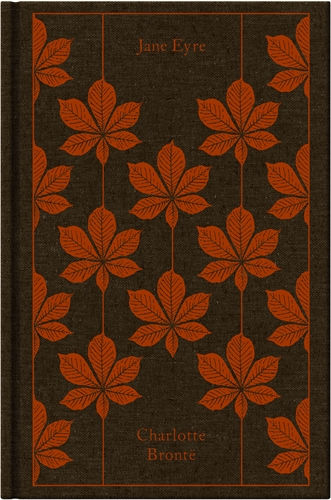

These are some highly-recommended classic novels. I took this list from a Penguin Classics article, which is also where I got the book cover images. The original list contains 100 books, but I used only the top 10. As the article explains, the list compiles their readers' most recommended classics. The book descriptions are directly from their Wikipedia pages, which I have linked on the Credits page in case you want to know more.
-

1
Pride and Prejudice
Jane Austen
'Pride and Prejudice is the second novel by English author Jane Austen, published in 1813. A novel of manners, it follows the character development of Elizabeth Bennet, the protagonist of the book, who learns about the repercussions of hasty judgments and comes to appreciate the difference between superficial goodness and actual goodness.
'Pride and Prejudice has consistently appeared near the top of lists of "most-loved books" among literary scholars and the reading public. It has become one of the most popular novels in English literature, with over 20 million copies sold, and has inspired many derivatives in modern literature. For more than a century, dramatic adaptations, reprints, unofficial sequels, films, and TV versions of Pride and Prejudice have portrayed the memorable characters and themes of the novel, reaching mass audiences.'1
-

2
To Kill a Mockingbird
Harper Lee
'To Kill a Mockingbird is a novel by the American author Harper Lee. It was published in July 1960 and became instantly successful. In the United States, it is widely read in high schools and middle schools. To Kill a Mockingbird has become a classic of modern American literature; a year after its release, it won the Pulitzer Prize. The plot and characters are loosely based on Lee's observations of her family, her neighbors and an event that occurred near her hometown of Monroeville, Alabama, in 1936, when she was ten.
'Despite dealing with the serious issues of rape and racial inequality, the novel is renowned for its warmth and humor. Atticus Finch, the narrator's father, has served as a moral hero for many readers and as a model of integrity for lawyers.
As a Southern Gothic novel and Bildungsroman, the primary themes of To Kill a Mockingbird involve racial injustice and the destruction of innocence. Scholars have noted that Lee also addresses issues of class, courage, compassion, and gender roles in the Deep South. Lessons from the book emphasize tolerance and decry prejudice.'2
-

3
The Great Gatsby
F. Scott Fitzgerald
'The Great Gatsby is a 1925 novel by American writer F. Scott Fitzgerald. Set in the Jazz Age on Long Island, near New York City, the novel depicts first-person narrator Nick Carraway's interactions with Jay Gatsby, the mysterious millionaire with an obsession to reunite with his former lover, Daisy Buchanan.
'During World War II, the novel experienced an abrupt surge in popularity when the Council on Books in Wartime distributed free copies to American soldiers serving overseas. This new-found popularity launched a critical and scholarly re-examination, and the work soon became a core part of most American high school curricula and a part of American popular culture. Numerous stage and film adaptations followed in the subsequent decades.'3
-

4
One Hundred Years of Solitude
Gabriel García Márquez
'One Hundred Years of Solitude is a 1967 novel by Colombian author Gabriel García Márquez that tells the multi-generational story of the Buendía family, whose patriarch, José Arcadio Buendía, founded the fictitious town of Macondo. The novel is often cited as one of the supreme achievements in world literature. It was recognized as one of the most important works of the Spanish language during the 4th International Conference of the Spanish Language held in Cartagena in March 2007.
'The magical realist style and thematic substance of One Hundred Years of Solitude established it as an important representative novel of the literary Latin American Boom of the 1960s and 1970s, which was stylistically influenced by Modernism (European and North American) and the Cuban Vanguardia (Avant-Garde) literary movement.'4
-
5
In Cold Blood
Truman Capote
'In Cold Blood is a non-fiction novel by the American author Truman Capote, first published in 1966. It details the 1959 murders of four members of the Clutter family in the small farming community of Holcomb, Kansas.
'Capote learned of the quadruple murder before the killers were captured, and he traveled to Kansas to write about the crime. He was accompanied by his childhood friend and fellow author Harper Lee, and they interviewed residents and investigators assigned to the case and took thousands of pages of notes. The killers, Richard Hickock and Perry Smith, were arrested six weeks after the murders and later executed by the state of Kansas. Capote ultimately spent six years working on the book.'5
-

6
Wide Sargasso Sea
Jean Rhys
'Wide Sargasso Sea is a 1966 novel by Dominican-British author Jean Rhys. The novel serves as a postcolonial and feminist prequel to Charlotte Brontë's novel Jane Eyre (1847), describing the background to Mr. Rochester's marriage from the point of view of his wife Antoinette Cosway, a Creole heiress. Antoinette Cosway is Rhys's version of Brontë's "madwoman in the attic". Antoinette's story is told from the time of her youth in Jamaica, to her unhappy marriage to an English gentleman, Mr. Rochester, who renames her Bertha, declares her mad, takes her to England, and isolates her from the rest of the world in his mansion. Wide Sargasso Sea explores the power of relationships between men and women and discusses the themes of race, Caribbean history, and assimilation as Antoinette is caught in a white, patriarchal society in which she fully belongs neither to Europe nor to Jamaica.'6
-
7
Brave New World
Aldous Huxley
'Brave New World is a dystopian novel by English author Aldous Huxley, written in 1931 and published in 1932. Largely set in a futuristic World State, whose citizens are environmentally engineered into an intelligence-based social hierarchy, the novel anticipates huge scientific advancements in reproductive technology, sleep-learning, psychological manipulation and classical conditioning that are combined to make a dystopian society which is challenged by the story's protagonist. Huxley followed this book with a reassessment in essay form, Brave New World Revisited (1958), and with his final novel, Island (1962), the utopian counterpart. This novel is often compared as an inversion counterpart to George Orwell's 1984 (1949).'7
-

8
I Capture the Castle
Dodie Smith
'I Capture the Castle was Dodie Smith's first novel, written during the Second World War when she and her husband Alec Beesley, a conscientious objector, moved from their native England to California. Smith was already an established playwright and later became famous for writing the children's classic The Hundred and One Dalmatians.
'The novel concerns an eccentric family struggling to live in genteel poverty in a decaying castle during the 1930s. The first-person narrator is Cassandra Mortmain, who tells the story through her journal. It is a coming-of-age story in which Cassandra becomes a young woman and experiences her first love.
'In 2003 the novel was listed at number 82 in the BBC's survey The Big Read.'8
-

9
Jane Eyre
Charlotte Brontë
'Jane Eyre is a novel by the English writer Charlotte Brontë. It was published under her pen name "Currer Bell" on 19 October 1847 by Smith, Elder & Co. of London. The first American edition was published the following year by Harper & Brothers of New York. Jane Eyre is a bildungsroman that follows the experiences of its eponymous heroine, including her growth to adulthood and her love for Mr Rochester, the brooding master of Thornfield Hall.
'The novel revolutionised prose fiction, being the first to focus on the moral and spiritual development of its protagonist through an intimate first-person narrative, where actions and events are coloured by a psychological intensity. Charlotte Brontë has been called the "first historian of the private consciousness" and the literary ancestor of writers such as Marcel Proust and James Joyce.'9
-

10
Crime and Punishment
Fyodor Dostoevsky
'Crime and Punishment is a novel by the Russian author Fyodor Dostoevsky. It was first published in the literary journal The Russian Messenger in twelve monthly installments during 1866. It was later published in a single volume. It is the second of Dostoevsky's full-length novels following his return from ten years of exile in Siberia. Crime and Punishment is considered the first great novel of his mature period of writing and is often cited as one of the greatest works of world literature.
'Crime and Punishment follows the mental anguish and moral dilemmas of Rodion Raskolnikov, an impoverished ex-student in Saint Petersburg who plans to kill an unscrupulous pawnbroker, an old woman who stores money and valuable objects in her flat. He theorises that with the money he could liberate himself from poverty and go on to perform great deeds, and seeks to convince himself that certain crimes are justifiable if they are committed in order to remove obstacles to the higher goals of "extraordinary" men. Once the deed is done, however, he finds himself wracked with confusion, paranoia, and disgust. His theoretical justifications lose all their power as he struggles with guilt and horror and is confronted with both internal and external consequences of his deed.'10